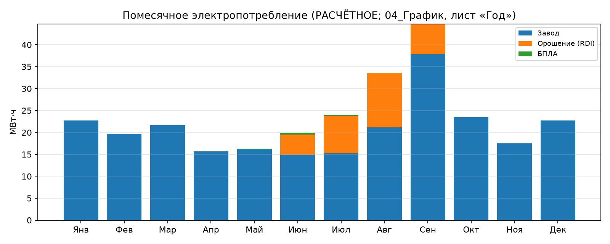
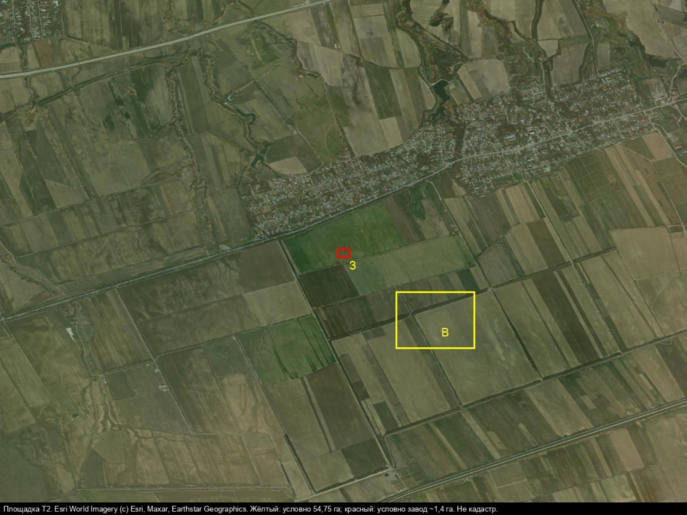
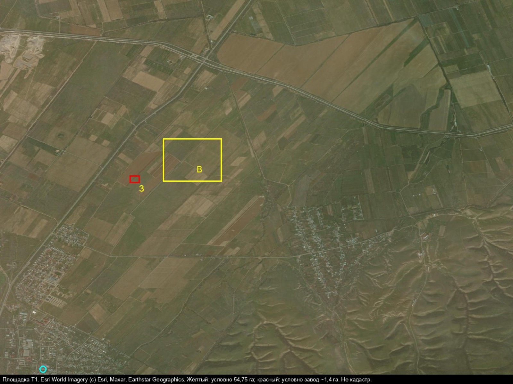

Как читать. У каждой цифры есть статус: ПОДТВЕРЖДЕНО — источник именно по объекту; ТИПОВОЕ — каталог производителя или аналог; РАСЧЁТНОЕ — посчитано, формула в файлах; НЕИЗВЕСТНО — данных нет. Это учебная предпроектная база, а не проект и не данные Arba Wine.
Главные выводы
- Проектная мощность — 300 т/сезон, ≈240 тыс. бутылок. 275 тыс. из задания недостижимо даже без потерь, 250 тыс. — на пределе.
- Участка 0,75 га хватает с запасом. По норме плотности застройки (≥50 %) он даже великоват.
- Площадка для учёбы — «Шелек — Майское». Юридическая доступность земли не подтверждена.
- Санитарно-защитная зона — 300 м до жилья: завод не может стоять внутри села.
- Питание — 10 кВ; трансформаторы 1 × 250 кВА + ДГУ 80/88 кВА или 2 × 160 кВА — по расчёту, а не заранее.
- Финансы Arba Wine не опубликованы. Выручка 1,1–1,7 млрд ₸ — оценка сервиса, а не отчётность.
1. Аналог: Arba Wine
ТОО «ARBA WINE», с. Каракемер, долина р. Тургень, ≈1 000 м. Полный цикл: собственный виноград, ручной сбор с 20 августа до середины октября, прессы Bucher Vaslin, танки Gortani, бочковая выдержка, розлив Alfatek 2 500 бут./ч.
| Показатель | Что найдено | Статус |
|---|---|---|
| Виноградники | 52 га (2016), 267 га (2021), ≈170 + 49 га (2022) | СМИ противоречиво |
| Выпуск | до 300 тыс. бут. (KAZNEX, 2016); ≈400 тыс. (The Buyer, 2016); 80–100 тыс. (блог, 2022) | СМИ противоречиво |
| Мощность | 400 тыс. бут./год — слова владельца (SCMP, 2020) | заявление |
| «547 тыс. бут.» | Нет ни в одном источнике. Совпадает с 109,5 га × 5 000 бут./га | не данные Arba |
| Выручка 2017–2022 | 1,6 / 1,5 / 1,7 / 1,6 / 1,2 / 1,1 млрд ₸ — «оценочная выручка» ElDala.kz со ссылкой на statsnet | оценка сервиса |
| Прибыль, налоги, переработка | Не найдено | НЕИЗВЕСТНО |
2. Проверка задания и выбор мощности
| Параметр задания | Проверка | Вывод |
|---|---|---|
| 54,75 га × 5,6 т/га = 306,6 т | Средняя урожайность РК 2025 — 5,55 т/га (МСХ) | Согласовано |
| Переработка 300 т | 306,6 т минус ≈2 % отхода на сортировке | Согласовано |
| Сусло 214 620 л | = 306,6 т × 0,7 — посчитано от сбора | Для 300 т — 210 000 л |
| 0,7 л/кг | Верхняя граница выхода сусла по всем фракциям (UC Davis ≈690 л/т) | Это не выход вина |
| 250–275 тыс. бут. | 300 т × 0,64–0,70 л/кг × 0,907 (осадки, фильтрация, розлив) / 0,75 л | ≈243 тыс.; принять 240 тыс. |
| Прежний вариант 600 т → 500–550 тыс. | Тот же расчёт | ≈490 тыс. |
Сценарии урожайности
| Показатель | Низкий 4,0 т/га | Базовый 5,6 т/га | Высокий 7,5 т/га |
|---|---|---|---|
| Сбор / переработка, т | 219 / 215 | 307 / 300 | 411 / 402 |
| Пиковая приёмка, т/сут | 10,7 | 15,0 | 20,1 |
| Линия приёмки, т/ч | 1,7 | 2,4 | 3,3 |
| Готовое вино, м³ / бутылок, тыс. | 130 / 174 | 183 / 243 | 244 / 326 |
| Ёмкости, м³ / бочек 225 л | 182 / 128 | 255 / 179 | 341 / 240 |
| Барабан пресса, гл | 22 | 31 | 42 |
| Холод, кВт холода / кВт эл. | 32 / 20 | 45 / 28 | 60 / 37 |
| Линия розлива, бут./ч | 590 | 830 | 1 110 |
Холодопроизводительность (кВт холода) и электрическая мощность чиллера — разные величины. Метод расчёта холода — AWRI, 2012.
3. Технология
- Ручной сбор
20.08–15.10 - Приёмка, весы, сортировка
- Белое: прессование целыми гроздьями → охлаждение, отстой → брожение 12–18 °C
- Красное: гребнеотделение → брожение на мезге 24–30 °C → прессование
- ЯМБ 18–22 °C
подогрев, X–I - Выдержка: танки, бочки, погреб 12–15 °C
- Холодная стабилизация −4…−5 °C
- Фильтрация → розлив с азотом
- Оформление, склад
Параллельно в сезон идут приёмка новых партий, брожение принятых и отжим сброженной мезги, поэтому пик нагрузки приходится на конец сентября. Круглый год работают холод, климат погреба и очистные. Розлив — в межсезонье.
4. Аналоги: что подтверждено у реальных виноделен
Казахстан
- Arba Wine — единственная, кто публикует модели: прессы Bucher Vaslin, танки Gortani, насос CSF A LOBI B215-3200, фильтр Spadoni MAC10, розлив Alfatek QBS-V 2 500 бут./ч, OMAR, R&G, C&G. Сезон 20.08 — середина октября, «практически круглосуточно».
- Голд Продукт (до 7 000 т), Silk Alley (3 000 т), Бахус — только «европейское оборудование», марок нет.
- Сервис в РК есть у Grundfos, Kaeser, Kärcher, Daikin, Breezart. У Bucher, GAI, Enoveneta, MTA — нет: нужен склад запчастей.
Зарубежье (12 аналогов)
- Grottarossa (Сицилия): полный реестр ЭП, ввод 15 кВ, максимум 318 кВт, cosφ 0,54–0,70 — нужна компенсация.
- Winery A (Австралия, ≈500 т): две холодильные машины, ≈376 кВт·ч/т.
- Albert Mann, Les Monderys, Кварели: прессы 40–50 гл, азот, автоматика ёмкостей, ввод ≈100 кВт на 200 т.
- Вывод: выбранные решения подтверждаются; годовое потребление пересчитано (было завышено).
5. Электроприёмники по объектам генплана
74 позиции, привязанные к объектам № 1–20; виноградник — отдельно. Количество всего / рабочих / резервных, паспортные мощности, режимы, Ки и cosφ, участие в сезонном, летнем и зимнем максимумах. Прежние 39 ЭП и ТП 2 × 160 кВА не переносились.
| Объект (щит) | Sр, кВА |
|---|---|
| № 2 Мойка, CIP, компрессорная, азот | 49,4 |
| № 11 АБК (электроотопление) | 39,9 |
| № 13 Площадка чиллеров | 38,3 |
| № 5 Лаборатория, ГРЩ, тепловой пункт | 30,3 |
| № 1 Приёмно-прессовое | 21,0 |
| № 3 Бродильно-хранильное | 18,0 |
| № 6 Цех розлива | 10,0 |
| № 20 Бокс БПЛА и АКБ | 9,7 |
| № 18 Очистные | 9,6 |
| Остальные объекты | ≈16 |
Ключевое оборудование
- Прессы Bucher Vaslin XPlus 40 + XPro 15 — 8,0 + 5,4 кВт
- Чиллеры 2 × MTA TAEevo Tech 201 — 2 × 17,35 кВт (31,4 кВт холода каждый, пуск 134 А)
- Приёмка Enoveneta: бункер, вибростол, TOP 5, насос мезги; весы Mettler Toledo
- Розлив GAI 1306 Y + этикетировщик GAI 6012W + термокапсула
- Сжатый воздух 2 × Kaeser SM 10 T, азот Inmatec PN 30 N
- ДГУ Kohler SDMO J88 80/88 кВА; пожарные насосы Grundfos CR 45-2 7,5 кВт (1 + 1)
Без паспорта (требует уточнения): термоголовка капсулятора, шнек выжимки, насос пластинчатого фильтра, вентилятор шкафа АКБ, приборы учёта алкоголя; очистные — оценка 8,3 кВт.
6. Сменность и проверка линий
| Участок | Проверка | Режим |
|---|---|---|
| Приёмка (№ 10, 1) | Пик 15 т/сут; ограничивает сортировка ≈3 т/ч → ≈5 ч | 1 удлинённая дневная смена |
| Пресс, белое (№ 1) | XPlus 40: 2,4 т за цикл 3,1 ч → 7,5 т ≈ 12 ч | 2 смены только в пиковые дни |
| Пресс, красное | XPro 15: 4,5 т за цикл → ≈4 ч | 1 смена |
| Брожение, холод (№ 3, 13) | 45 кВт холода нужно, 62,8 кВт есть | Автоматика 24 ч, без третьей смены |
| Розлив (№ 6) | 240 тыс. бут. ≈ 27–36 смен | 1 смена, февраль–июль |
| Воздух, азот, горячая вода | 1,26 м³/мин из 1,88; азот 8,4 Нм³/ч; бойлеры 2 × 462 л | Достаточно |
7. Нагрузки, трансформаторы, напряжение
| РТМ 36.18.32.4-92, шины 0,4 кВ | Сезон (IX) | Лето (VII) | Зима (I) |
|---|---|---|---|
| ΣPуст силовых в режиме, кВт | 212 | 205 | 224 |
| Pр, кВт | 144 | 140 | 155 |
| Sр после компенсации, кВА | 150 | 145 | 162 |
| Iр на 0,4 кВ, А | 229 | 221 | 246 |
Категории
I + II ≈ 67 кВА (холод, приёмка, вентиляция CO₂, пожарные насосы, ОПС) — покрывает ДГУ 80/88 кВА. III ≈ 90 кВА.
Трансформаторы
1 × 250 кВА (β ≈ 0,65) + ДГУ с АВР или 2 × 160 кВА (β ≈ 0,51). 1 × 160 перегружен, 2 × 250 недогружены.
Напряжение
10 кВ (формула Стилла 8–10 кВ). Своя ПС 35 или 110 кВ при ≈0,15 МВА не обоснована.
Компенсация
УКРМ 25–37,5 квар: у реального аналога cosφ был 0,54–0,70.


Насосная орошения (≈37 кВА) — отдельный раздел; если питать её от КТП завода, летний максимум ≈182 кВА.
8. Выбор участка
| Площадка | Координаты | Баллы из 33 | Главное |
|---|---|---|---|
| S «Шелек — Майское» — выбрана | 43.5607, 78.2980 | 26 | Теплее всех (ΣT>10 ≈3 860 °C), заморозки 2 года из 30, самотёк от БАК; ПС «Чилик» 220/110/35/10 кВ в 2,7 км (резерв по АЖК — 0 МВт) |
| T2 «Бірлік» — запасная | 43.4827, 77.5307 | 23 | 75 км до Алматы, самотёк; прохладнее; СЗЗ 300 м в текущей точке не выполняется |
| T1 «Тургень-восток» | 43.4600, 77.6450 | 21 | Рядом Arba; заморозки 13 лет из 30 |
| U «Шырын» | 43.6730, 79.5050 | 18 | Жарко и засушливо, 280 км до Алматы |




Природно пригоден ≠ юридически свободен. Кадастр и свободность земли не проверены ни для одной площадки. Сейсмичность — 9 баллов. Какая подстанция будет питать завод, решают технические условия АО «АЖК». Снимки: Esri World Imagery, контуры условные.
9. Генплан

- Кольцевой проезд — подъезд пожарных машин с двух сторон (корпус шире 18 м).
- Разрывы между зданиями выдержаны (корпус — АБК 14 м).
- Скважина с зоной санитарной охраны 30–50 м на участке не помещается — вне площадки.
10. Орошение, БПЛА, SCADA
Вода
Оросительная норма 2 930–4 490 м³/га, на 54,75 га — 160–246 тыс. м³ за сезон (FAO-56 по климату NASA POWER).
Насосная
Q = 162 м³/ч, H ≈ 50–55 м → 3 × Grundfos CR 125-2-1 по 18,5 кВт (2 + 1 резерв, ЧРП). Пик ≈36 кВт, 32–50 МВт·ч за сезон.
Автоматика
Фертигация Netafim NetaJet 4G (2,2 кВт), клапаны Bermad 24 В, датчики TEROS 12, шлюз LoRaWAN, SCADA.
Дроны
DJI T50 + зарядная C10000 (до 9 кВт). Одна обработка 54,75 га — ≈83 вылета, ≈91 кВт·ч; за год 0,5–1 МВт·ч.
Ограничение: по санитарным правилам РК поля, обрабатываемые пестицидами с воздуха, должны быть не ближе 2 000 м к сёлам. Касается ли это дронов, в тексте не сказано. У всех площадок виноградник ближе 2 км к селу.
11. Предварительная экономика
| Показатель | Пессимистичный | Базовый | Оптимистичный |
|---|---|---|---|
| Выпуск / продано, тыс. бут. | 174 / 148 | 243 / 219 | 260 / 247 |
| Розница / нетто-цена завода, ₸ | 5 000 / 2 460 | 6 500 / 3 580 | 8 000 / 4 890 |
| Выручка без НДС и акциза, млн ₸ | 364 | 783 | 1 207 |
| Операционные затраты, млн ₸ | 505 | 444 | 357 |
| Капзатраты за вычетом субсидий, млн ₸ | 2 463 | 1 545 | 1 051 |
| Чистая прибыль, млн ₸ | −297 | 189 | 622 |
| Окупаемость с освоением виноградника | не окупается | ≈9 лет | ≈4,5 года |
Электроэнергия — ≈3 % операционных затрат (43,13 ₸/кВт·ч без НДС). Выручка Arba на новый завод не переносилась. Цены оборудования без коммерческих предложений — допущения.
12. Ключевые нормы РК
| Требование | Значение | Документ |
|---|---|---|
| Санитарно-защитная зона | Класс III, 300 м | Приказ МЗ РК № ҚР ДСМ-2 от 11.01.2022, прил. 1 |
| Плотность застройки | ≥50 % | СП РК 3.01-103-2012*, прил. А, поз. 100 |
| Пожарный подъезд | С двух сторон при ширине здания > 18 м | СП РК 3.01-103-2012*, п. 6.1.8 |
| Пожарные насосы | I категория надёжности | СН РК 4.01-01-2011, п. 7.13 |
| Авиаобработка пестицидами | ≥2 000 м до сёл | Приказ № ҚР ДСМ-2, п. 23 |
| Категория по Экокодексу | III (декларация о воздействии) | Экологический кодекс РК, прил. 2 |
| Учёт алкогольной продукции | Приборы учёта с ИБП при розливе | Закон РК № 429-I |
| Водный кодекс | Действует с 10.06.2025 | № 178-VIII от 09.04.2025 |
Действующие редакции нужно сверить на adilet.zan.kz в браузере — сайт не отдаёт текст автоматической проверке.
13. Что не подтверждено и что запросить
- Arba Wine: объём переработки, выпуск по годам, ёмкости, данные учёта электроэнергии, однолинейная схема.
- Поставщики: паспорт XPlus 40 (напряжение, компрессор), подбор чиллера при гликоле −5/0 °C, КП на линию розлива и очистные.
- Сети и вода: технические условия АО «АЖК» на ≈0,15–0,3 МВт, лимит воды от Казводхоза, данные Казгидромета (МС Шелек).
- Земля: кадастровые сведения по площадке, проект СЗЗ, категории помещений по взрывопожарной опасности.